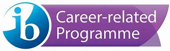

EIB LE CARTESIEN
EIB LE CARTESIEN
Career-related Programme
The International Baccalaureate® (IB) Career-related Programme (CP) is designed for students aged 16-19.
The CP is a framework of international education that incorporates the values of the IB into a unique programme addressing the needs of students engaged in career-related education.
The programme leads to further/higher education, apprenticeships or employment.
CP students undertake a minimum of two IB Diploma Programme (DP) courses, a core consisting of four components and a career-related study.
For CP students, DP courses provide the theoretical underpinning and academic rigour of the programme; the career-related study further supports the programme’s academic strength and provides practical, real-world approaches to learning; and the CP core helps them to develop skills and competencies required for lifelong learning.
Students complete at least two DP courses in any of that programme's subject groups. DP courses provide and enhance the theoretical underpinnings and academic rigour of the CP.
The CP core components give context to the DP courses and the career-related study, drawing all aspects of the framework together. Through the CP core, students develop personal qualities and professional skills, as well as intellectual habits required for lifelong learning.
Each school chooses the career-related study most suited to local conditions and the needs of its students The career-related study must satisfy IB criteria for accreditation, assessment and quality assurance.
The CP provides a comprehensive educational framework that combines highly regarded and internationally recognized courses, from the IB Diploma Programme (DP), with a unique CP core and an approved career-related study.
The CP develops students to be:
The CP helps students to prepare for effective participation in life, fostering attitudes and habits of mind that allow them to become lifelong learners and to get involved in learning that develops their capacity and will to make a positive difference.
The programme aids schools’ retention of students, promotes development of skills, and encourages students to take responsibility for their own actions, encouraging high levels of self-esteem through meaningful achievements.
A key feature of the CP is that it provides flexibility to allow for local differences. Each school creates its own distinctive version of the CP to meet the needs, backgrounds and contexts of its students.
The CP enables students to: